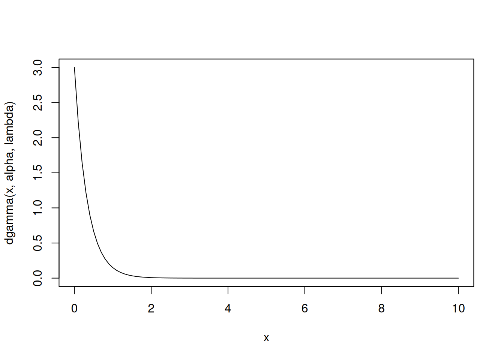
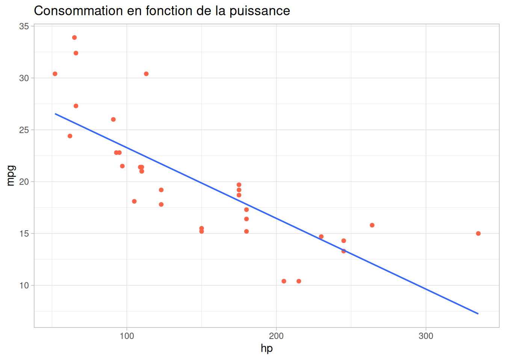
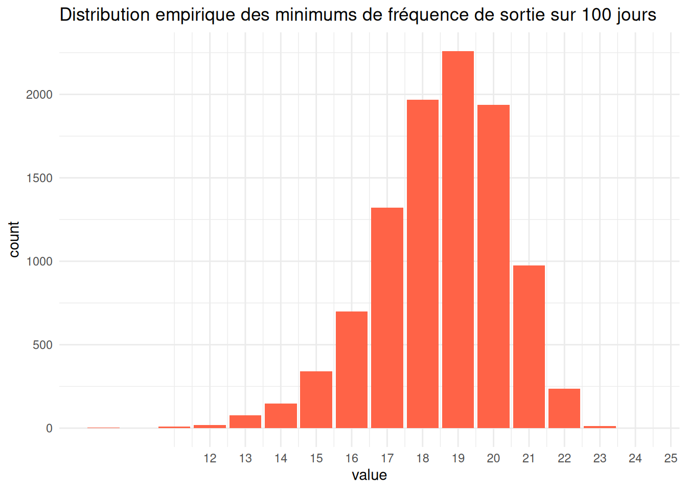

projet_initial
1 Introduction
Pour présenter Quarto, nous allons nous référer à l’article de Evans (2025).
2 L’intelligence artificielle et la programmation en R
L’auteur montre un exemple de formule mathématique en Latex. Nous avons reproduit cet exemple (Figure 2, de l’article) ci-dessous.
Let \(Y\sim Bin(n,p)\), where \(n\geq1\) and \(0\leq p\leq1\), then the probability mass function of \(Y\) is given by, \[ P(Y=y)=\binom{n}{y}p^y(1-p)^{n-y}, \quad y=0,1, \ldots, n. \]
Source : Evans (2025)
3 Les chunks R dans quarto
3.0.1 Loi de Poisson
Loi discrète : on dit que \(X\) suit une loi de poisson de paramètre \(\lambda\) > 0 \[ P(X=x)=\frac{\lambda^{x}}{x!}e^{-\lambda},\: x \in \mathbb{N} \]
On peut utiliser R pour calculer ces probabilités par exemple \(\lambda=3\)
3.0.2 Esperance mathématique
[1] 2.996693 [,1]
[1,] 2.996693On trouve environ 3 qui est le paramètre de \(\lambda\)
On peut aussi exécuter en ligne les chunks : 2.997.
3.0.3 Les chunks avec Python
import numpy as npa = [0, 1, 2, 3, 4, 5, 6, 7, 8, 9, 10]
a = np.array(a)
print(np.mean(a))5.03.0.4 Application Shiny
alpha = 1
lambda = 3
curve(dgamma(x, alpha, lambda), 0, 10)
Modifiez les valeurs pour observer l’évolution de la courbe.
4 L’intelligence et la programmation en R
4.1 Introduction à tidyverse
library(tidyverse)4.1.1 Exemple préliminaire (tibbles & pipe)
voitures = tibble(mtcars) # Le format de données préféré du tidyverse
# Le pipe il est dans magrittr
64 %>% log(2) %>% exp()[1] 403.4288voitures %>% names() # Avoir les noms de colonnes [1] "mpg" "cyl" "disp" "hp" "drat" "wt" "qsec" "vs" "am" "gear"
[11] "carb"voitures$mpg # Méthodes sans tibble [1] 21.0 21.0 22.8 21.4 18.7 18.1 14.3 24.4 22.8 19.2 17.8 16.4 17.3 15.2 10.4
[16] 10.4 14.7 32.4 30.4 33.9 21.5 15.5 15.2 13.3 19.2 27.3 26.0 30.4 15.8 19.7
[31] 15.0 21.4# Méthodes avec tibble :
voitures %>% select(mpg, cyl) %>% summarise(mpg_moyenne = mean(mpg),
cyl_moyenne = mean(cyl),
mpg_sd = sd(mpg),
cyl_sd = sd(cyl)
) %>% round(2) -> statdeslibrary(kableExtra)
Attaching package: 'kableExtra'The following object is masked from 'package:dplyr':
group_rowspivot_longer(statdes,
cols = everything(),
names_to = c("variable", ".value"),
names_sep = "_"
) %>% kable(
caption = "Statistiques descriptives des véhicules",
col.names = c("Variable", "Moyenne", "Écart-type (SD)"),
align = "lrr", # Gauche pour le texte, Droite pour les chiffres
digits = 2 # Arrondi à 2 décimales
) %>%
kable_styling(
bootstrap_options = c("striped", "hover", "condensed"),
full_width = FALSE,
position = "left"
) %>%
column_spec(1, bold = TRUE, color = "white", background = "tomato") # Met en valeur les noms de variables| Variable | Moyenne | Écart-type (SD) |
|---|---|---|
| mpg | 20.09 | 6.03 |
| cyl | 6.19 | 1.79 |
library(stargazer)
Please cite as: Hlavac, Marek (2022). stargazer: Well-Formatted Regression and Summary Statistics Tables. R package version 5.2.3. https://CRAN.R-project.org/package=stargazer stargazer(voitures, type = "text")
=================================
Statistic N Mean St. Dev. Min Max
=================================4.1.2 Régression linéaire et sortie Latex
library(ggthemes)
voitures %>% ggplot(aes(hp, mpg)) + geom_point(col = "tomato") +
ggtitle("Consommation en fonction de la puissance")+
geom_smooth(method="lm", se=FALSE, size = 0.7)+
theme_light()
4.2 Stargazer
library(stargazer)model1 = lm(mpg ~ hp, data = voitures)
stargazer(model1, type = "html")| Dependent variable: | |
| mpg | |
| hp | -0.068*** |
| (0.010) | |
| Constant | 30.099*** |
| (1.634) | |
| Observations | 32 |
| R2 | 0.602 |
| Adjusted R2 | 0.589 |
| Residual Std. Error | 3.863 (df = 30) |
| F Statistic | 45.460*** (df = 1; 30) |
| Note: | p<0.1; p<0.05; p<0.01 |
5 Keno
5.0.1 Travailler avec des données réelles
On importe les données historiques du jeu du Keno sur une période de 100 jour.
data_keno = read.table("keno_202511 6.csv", sep = ";", header = TRUE) %>% select(-c(1, X, devise, numero_jokerplus, multiplicateur, date_de_forclusion))
data_keno date_de_tirage boule1 boule2 boule3 boule4 boule5 boule6 boule7 boule8
1 10/02/2026 12 13 17 20 22 23 26 27
2 09/02/2026 1 3 4 9 11 12 14 15
3 08/02/2026 2 7 13 19 21 23 26 29
4 07/02/2026 2 3 4 7 9 12 14 23
5 06/02/2026 1 3 7 9 12 13 14 16
6 05/02/2026 4 6 7 12 14 19 25 28
7 04/02/2026 8 11 14 16 17 18 19 23
8 03/02/2026 1 2 11 13 16 17 18 20
9 02/02/2026 5 8 10 13 16 24 26 34
10 01/02/2026 1 9 10 12 20 21 25 36
11 31/01/2026 1 5 6 10 11 14 18 21
12 30/01/2026 1 2 9 14 16 19 23 24
13 29/01/2026 3 10 16 17 21 25 27 29
14 28/01/2026 3 5 11 14 16 22 24 27
15 27/01/2026 1 8 9 10 11 17 21 24
16 26/01/2026 1 6 14 21 22 24 28 29
17 25/01/2026 4 10 12 13 16 19 20 23
18 24/01/2026 2 4 7 14 17 18 19 25
19 23/01/2026 7 9 13 14 23 24 25 27
20 22/01/2026 2 6 8 13 16 29 33 36
21 21/01/2026 4 6 10 11 16 27 28 29
22 20/01/2026 1 7 10 17 19 20 26 28
23 19/01/2026 4 6 7 11 13 15 17 19
24 18/01/2026 4 7 8 13 16 17 19 20
25 17/01/2026 1 12 13 15 18 19 25 28
26 16/01/2026 4 7 9 12 14 17 19 29
27 15/01/2026 2 7 8 10 12 14 20 21
28 14/01/2026 1 2 3 6 9 11 19 31
29 13/01/2026 2 3 6 12 19 20 29 31
30 12/01/2026 2 4 14 15 16 18 20 21
31 11/01/2026 13 14 19 23 24 25 26 27
32 10/01/2026 2 9 12 14 20 21 24 32
33 09/01/2026 7 10 13 15 19 23 26 30
34 08/01/2026 2 7 11 13 23 27 31 32
35 07/01/2026 1 5 10 11 13 14 20 23
36 06/01/2026 7 12 17 19 22 23 24 26
37 05/01/2026 1 4 10 12 13 19 28 31
38 04/01/2026 2 14 16 17 22 24 28 31
39 03/01/2026 3 8 12 13 15 18 20 23
40 02/01/2026 2 3 4 9 10 13 14 17
41 01/01/2026 1 10 13 17 18 20 23 26
42 31/12/2025 3 8 9 12 15 17 21 24
43 30/12/2025 2 4 7 9 10 17 19 21
44 29/12/2025 10 16 17 19 21 23 26 33
45 28/12/2025 4 8 9 13 16 19 23 28
46 27/12/2025 1 3 5 7 14 19 26 30
47 26/12/2025 6 10 12 23 25 28 30 33
48 25/12/2025 2 3 4 9 13 15 18 23
49 24/12/2025 1 2 4 7 14 26 27 30
50 23/12/2025 1 3 5 7 10 13 22 23
51 22/12/2025 6 8 11 20 28 32 34 35
52 21/12/2025 1 2 4 6 14 19 21 25
53 20/12/2025 3 7 9 12 14 21 22 27
54 19/12/2025 3 5 6 12 14 15 16 24
55 18/12/2025 1 8 12 17 22 24 25 32
56 17/12/2025 4 9 13 15 17 21 26 33
57 16/12/2025 1 5 6 8 9 11 13 16
58 15/12/2025 3 5 6 8 10 16 17 18
59 14/12/2025 4 9 11 13 15 17 19 20
60 13/12/2025 3 9 11 12 13 19 22 24
61 12/12/2025 5 7 10 17 23 28 29 30
62 11/12/2025 10 13 15 18 19 22 24 25
63 10/12/2025 2 4 7 8 12 17 20 21
64 09/12/2025 3 10 13 19 21 31 33 36
65 08/12/2025 2 4 5 15 22 26 28 35
66 07/12/2025 2 3 10 11 18 21 26 28
67 06/12/2025 6 7 9 17 19 23 24 25
68 05/12/2025 3 8 24 29 30 33 38 39
69 04/12/2025 3 13 14 22 25 28 31 32
70 03/12/2025 1 4 10 13 14 15 20 21
71 02/12/2025 5 9 14 18 20 22 25 27
72 01/12/2025 2 9 11 22 24 30 32 37
73 30/11/2025 1 6 7 8 9 10 18 19
74 29/11/2025 4 7 11 15 16 23 24 30
75 28/11/2025 12 19 20 21 22 26 27 31
76 27/11/2025 1 7 9 14 21 27 28 29
77 26/11/2025 1 4 5 8 9 12 14 15
78 25/11/2025 2 4 7 8 17 18 19 20
79 24/11/2025 6 7 13 15 16 24 25 30
80 23/11/2025 2 4 7 9 12 17 19 25
81 22/11/2025 1 4 5 10 15 18 21 24
82 21/11/2025 3 8 10 11 14 19 25 27
83 20/11/2025 3 5 6 9 19 24 29 30
84 19/11/2025 1 3 7 8 9 13 25 27
85 18/11/2025 4 7 14 21 23 27 30 35
86 17/11/2025 4 11 13 16 17 18 19 21
87 16/11/2025 1 2 6 7 13 14 23 31
88 15/11/2025 3 4 5 7 10 17 18 19
89 14/11/2025 1 7 11 13 14 19 20 25
90 13/11/2025 4 11 13 16 26 35 36 37
91 12/11/2025 5 6 8 11 23 24 26 27
92 11/11/2025 8 12 17 21 26 27 29 30
93 10/11/2025 4 8 9 11 13 28 30 39
94 09/11/2025 2 7 23 26 29 31 33 36
95 08/11/2025 3 9 14 17 21 24 29 30
96 07/11/2025 7 11 12 14 17 21 27 30
97 06/11/2025 7 9 11 15 20 22 28 29
98 05/11/2025 1 3 6 10 11 13 17 21
99 04/11/2025 1 7 9 10 12 15 25 28
100 03/11/2025 3 11 15 16 17 18 19 29
boule9 boule10 boule11 boule12 boule13 boule14 boule15 boule16
1 39 42 45 48 50 52 55 56
2 25 31 36 39 45 46 53 55
3 35 40 43 44 51 52 53 56
4 27 31 39 42 45 46 49 53
5 30 35 41 42 44 46 52 55
6 36 38 44 46 48 50 52 55
7 25 27 28 40 42 50 54 56
8 26 31 37 38 39 41 44 53
9 41 44 47 48 49 51 54 55
10 42 43 46 50 51 52 55 56
11 24 26 31 41 42 49 51 53
12 30 32 36 37 41 42 48 56
13 31 32 34 41 44 46 54 55
14 28 29 33 46 48 49 50 51
15 27 29 40 41 45 48 53 55
16 37 38 44 47 49 50 55 56
17 26 27 31 34 35 36 39 53
18 26 28 29 37 41 45 48 49
19 32 34 39 40 41 50 53 56
20 37 42 44 45 46 47 49 54
21 30 40 41 42 46 47 51 52
22 32 36 38 42 46 49 51 56
23 22 30 34 35 51 53 54 55
24 21 24 27 28 31 33 50 54
25 31 35 37 38 39 48 49 55
26 34 35 38 44 46 49 53 55
27 26 27 33 38 40 42 44 45
28 33 37 39 40 47 49 50 55
29 41 46 47 48 50 52 53 54
30 23 26 27 30 34 35 45 54
31 34 35 39 41 44 46 47 51
32 35 38 41 42 44 48 54 55
33 32 34 37 40 41 45 50 51
34 33 37 39 41 43 47 48 49
35 28 30 35 38 43 47 49 56
36 34 37 38 42 44 45 48 55
37 37 41 47 48 49 50 51 55
38 32 33 34 35 39 42 45 53
39 24 29 34 35 38 50 52 55
40 19 27 30 35 38 40 43 55
41 27 31 38 39 40 43 49 53
42 29 30 31 32 41 44 50 54
43 22 25 27 30 40 43 50 56
44 39 41 43 44 46 50 53 55
45 33 35 36 46 48 50 52 53
46 31 39 43 47 51 52 54 55
47 35 36 41 43 46 51 53 55
48 24 27 28 34 41 47 49 56
49 44 45 46 48 49 52 54 56
50 26 34 36 39 41 43 44 46
51 37 43 44 45 47 48 50 52
52 28 29 33 38 40 41 44 52
53 28 30 34 38 40 47 50 53
54 27 30 43 48 49 50 51 56
55 35 37 43 45 50 51 52 53
56 34 36 47 49 50 51 52 53
57 25 28 32 37 46 47 55 56
58 20 25 29 33 35 47 50 52
59 23 29 31 38 41 46 48 53
60 25 30 31 39 43 45 46 55
61 32 35 37 40 41 48 53 55
62 27 36 40 47 49 51 52 53
63 27 33 34 35 36 44 48 56
64 37 38 40 41 42 45 51 52
65 38 45 49 52 53 54 55 56
66 30 32 33 40 46 47 53 55
67 31 32 34 38 42 43 47 49
68 40 43 46 47 49 50 51 53
69 34 36 39 42 47 51 53 55
70 25 26 29 34 35 46 47 56
71 28 30 32 36 43 49 51 56
72 38 40 41 43 46 50 53 55
73 22 28 31 44 45 48 49 52
74 32 34 37 39 44 48 53 56
75 33 36 41 42 44 45 50 54
76 34 36 37 40 42 45 46 47
77 20 22 32 36 39 42 53 55
78 28 30 31 37 42 47 48 51
79 33 37 38 39 42 51 52 54
80 27 37 38 41 42 44 51 56
81 31 34 35 38 41 47 49 54
82 33 34 38 41 42 44 46 54
83 32 36 39 41 44 47 48 56
84 28 33 35 37 41 44 46 56
85 37 39 43 44 47 52 53 54
86 23 27 30 32 33 35 37 52
87 38 41 43 45 47 50 52 53
88 24 28 30 36 39 40 52 54
89 27 30 40 43 45 51 52 55
90 38 42 44 49 50 52 54 55
91 33 41 42 44 45 46 52 56
92 35 37 38 39 40 41 48 49
93 40 46 48 50 51 54 55 56
94 41 45 47 48 49 51 54 55
95 31 32 40 42 43 49 50 54
96 37 38 40 42 46 47 48 54
97 31 36 38 41 42 45 49 51
98 26 27 28 40 46 48 52 53
99 29 30 32 37 38 41 43 51
100 30 35 39 42 43 48 49 51library(lubridate)
pivot_longer(data_keno,
!date_de_tirage,
names_to = "boule",
values_to = "valeur",
names_prefix = "boule"
) -> keno
data_keno <- data_keno %>% mutate(date_de_tirage = as.Date(data_keno$date_de_tirage, format = '%d/%m/%Y'))
difftime(max(data_keno$date_de_tirage), min(data_keno$date_de_tirage))Time difference of 99 dayskeno# A tibble: 1,600 × 3
date_de_tirage boule valeur
<chr> <chr> <int>
1 10/02/2026 1 12
2 10/02/2026 2 13
3 10/02/2026 3 17
4 10/02/2026 4 20
5 10/02/2026 5 22
6 10/02/2026 6 23
7 10/02/2026 7 26
8 10/02/2026 8 27
9 10/02/2026 9 39
10 10/02/2026 10 42
# ℹ 1,590 more rowslibrary(scales) # Pour transformer en pourcentage
Attaching package: 'scales'The following object is masked from 'package:purrr':
discardThe following object is masked from 'package:readr':
col_factornombre_dates <- length(unique(keno$date_de_tirage)) # Calcul nombre de dates distinct
keno %>% summarise(count = n(), freq = percent(count/nombre_dates), .by = "valeur") %>% arrange(valeur) -> unique_keno
unique_keno# A tibble: 56 × 3
valeur count freq
<int> <int> <chr>
1 1 30 30%
2 2 26 26%
3 3 28 28%
4 4 32 32%
5 5 17 17%
6 6 21 21%
7 7 37 37%
8 8 23 23%
9 9 33 33%
10 10 30 30%
# ℹ 46 more rowsA corriger khi-2
# sum(((unique_keno$count - 28.57)^2)/28.57)
#
# chisq.test(x = unique_keno$count, p=rep(16/56, 56))pbinom(17, 100, 16/56)[1] 0.005328807set.seed(123)
res = c()
ech = c()
for (i in 1:10000){
for (t in 1:100){
ech = c(ech, sample(1:56, 16, replace = FALSE))
}
res = c(res, min(table(ech)))
ech = c()
}
as_tibble(res) %>% ggplot(aes(value)) + geom_bar(fill = "tomato") + scale_x_continuous(breaks = 12:25) + ggtitle("Distribution empirique des minimums de fréquence de sortie sur 100 jours") + theme_minimal()
Pr(X <= 17)=0.2615, P value est forte donc on conserve l’hypothèse H0 donc aucune boule n’est laisée. Une boule qui est tirée 17 fois ou moins reste très probable.
as_tibble(res) %>% filter(value <= 17) %>% summarise(count = n())# A tibble: 1 × 1
count
<int>
1 2615ceci est un test
Références bibliographiques
Evans, Kristian. 2025. « Innovative and interactive statistics teaching using Quarto ». Teaching Statistics.